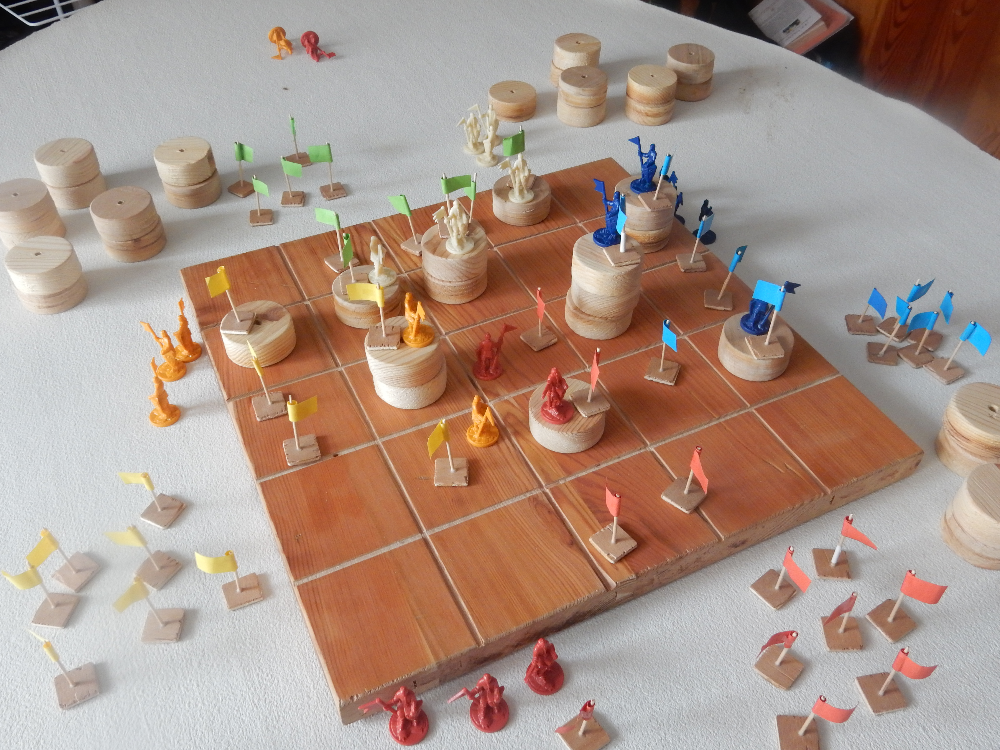

In this 2 to 4-player strategy game, build towers to take the higher ground on your opponents and secure victory.
Despite its simple rules, Towers offers captivating complexity where every action can turn into a decisive step toward victory or defeat. Start a 2-player game to experience the strategic tension of classical strategy games such as chess or go. Or engage with 3 or 4 players to add a whole new diplomatic dimension where your words will become just as valuable as your troops!
If you want to know more about the game or follow its development, please contact me at titouan.mazier@orange.fr !
The goal of the game is to conquer and maintain the largest territory.
| Number of players | Number of flags each player takes |
|---|---|
| 2 | 13 |
| 3 | 11 |
| 4 | 9 |
Before starting fighting each other, the players get to choose their initial position on the board through a "push your luck"-like process.
In clockwise order, each player will have to choose between the following to options:
or
When claiming its initial position, the player mark it by placing one of his pawns and one of his flags on it.
Repeat this step until every player but one has claimed an initial position. At that point, the last player has to choose his initial location with the same constraints.
! In a 2-player game, the last player to claim an initial position can place one last tower layer on the board before choosing its starting square.
When this step is completed, the game can start with the first player to have claim its initial location.
In clockwise order the players can at their turn take two actions among the following three:
One player can use the same action twice in the same turn as long as it is done with two different pawns, it can also use two different actions with the same pawn.
If a player is unable to pick realize an action, he has to pick another one. If he can't do any of the three then the game ends immediately.
Choose a pawn and move it according to the following rules:
After moving one of their pawns to a square, the player returns any flag already present on the square to its owner and capture for himself any pawn that was already present in that square. Then, he places one of its flag on the square.
Choose one of your pawns and place a tower layer on the square occupied by the pawn.
Place one of your pawn remaining from your reserve in one of the square with one of your flags where there is no pawn already.
Once all the pawns from your reserve are spawned you are not able to use this action anymore.
The game ends as soon as one of the following conditions is met:
or
or
Then, each player counts its points:
The player with the most points win the game.
While playing with 2 players, you can choose to use the following variation instead of the regular game: each player picks 2 colors and play alternatively each of their colors, just if they were 4 players playing in team. At the end of the game, the player with the most points with its two colors win the game.